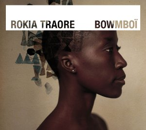

Париж, 29 сентября 2003

Q. Почему вы решили прекратить отношения с крупным лейблом и продюсировать новый альбом своими силами?Rokia: Меня как музыканта по-настоящему интересовал процесс создания проекта, что называется, от А до Я. И когда пришло время записывать новый альбом, я решила сама его продюсировать, а уже затем заключить контракт на его дистрибуцию крупной компанией. Я ничем не отличаюсь от других артистов, которые мечтают о славе и успехе. И я осознала, что то, что происходит со мной, типично для многих исполнителей world-сцены, когда они начинают мечтать о более широкой аудитории для своей музыки.
Переговоры с боссами лейбла тянулись так утомительно долго, что у меня поневоле появилось время, чтобы обдумать, "что же я хочу на самом деле?" И когда наступил момент подписывать контракт я поняла, что больше не хочу этого. Потому что все решения снова будут принимать люди, владеющие деньгами, люди, которые проводят все время в своих офисах, подcчитывая, что сколько стоит и сколько можно заработать на конкретном артисте. Я не захотела вновь попадать в эту ловушку. Поэтому я заключила с Label Bleu только контракт на дистрибуцию моей музыки в Европе, сохранив за собой право договариваться с другими компаниями в остальном мире.
Q. Niènafîng - песня о ценностях Мали. Вы чувствуете гордость, родившись в этой стране?
Rokia: Да, я этим очень горжусь и это одна из главных причин, почему я создаю свою музыку. Для меня имеет огромное значение возможность показать миру менее известную часть Мали. Я выросла в городе, не в деревне, и я хочу показать людям другой образ своей страны, взгляд моего поколения, если хотите. Я хочу показать Мали как думающую страну, страну в развитии, которая меняется, как и все в нашем мире.
Хотя у нас гораздо проще сделать себе имя, если ты связан «с корнями», вырос в нищете или что-то в этом роде. Я же чувствую себя слишком нормальной, слишком похожей на девушку развитого мира. Я не училась петь в семье гриотов, и даже корни мои не из Wassoulou. Среди моих родных не было охотников и я не принцесса древнего племени. Я обычная девушка - и именно под таким углом рассказываю о Мали.
Q. Вы записывали этот альбом целиком в вашей студии в Бамако?
Rokia: Да, это так. Два первых альбома были записаны в Студии Боголан и там же все инструменты для этого, кроме струнных The Kronos Quartet, которые были сделаны в Сан-Франциско. Я хочу, чтобы люди моей страны могли немного заработать на том, что я делаю. Я говорю не о создании рабочих мест или чем-то подобном, просто мой выбор в том, чтобы работать с малийскими музыкантами. Для меня лично это была не просто запись альбома, я хотела установить более тесные контакты и вместе с тем поднять уровень профессионализма. Музыка в Мали настолько естественная вещь и у нас такая богатая культурная традиция, что мы не всегда понимаем, что эта профессия требует и много тяжелой работы.
Q. Обложка альбома Bownboi демонстрирует ошеломляющий новый имидж Rokia. Как он был воспринят в Бамако?
Rokia: Просто ужасно! Но, между нами, так я чувствую себя намного естественней. Когда я росла, я казалась себе слишком приземленной. Когда вся твоя жизнь проходит в переездах по миру, ты часто оказываешься в местах, где ты ни на кого не похож. Но меня никогда сильно не заботило, что думают другие люди, я делаю все, что мне нравится, независимо нахожусь я в Мали или где-то еще. Когда я обрила голову, я даже не подозревала насколько это будет плохо воспринято, хотя я мечтала об этом уже три года. Меня по-настоящему достали все эти бесконечные сессии по заплетанию косичек, которые я была вынуждена проходить. Каждый месяц я ездила в Париж как на работу и проводила целый день в кресле парикмахера! И моя бритая голова действительно произвела впечатление. Когда в июле я вернулась в Бамако буквально каждый горел желанием сказать мне, что я стала черезчур европеизированной. До конца недели вся Мали только и делала, что обсуждала, как я выгляжу!
Q. Заглавный трек вашего нового альбома, поднимает очень личную тему и возвращает вас в детство...
Rokia: Да, заглавная тема - это колыбельная, которую мне пела мама, когда я была ребенком. Ее смысл: "Бог хранит ребенка бедняка". Одна из вещей, которая меня по-настоящему удивила на западе, это подход родителей к рождению ребенка. На моей родине мы считаем, что ребенок сам выбирает придти в этот мир, не ожидая каких-то гарантий. Мир во все времена был непредсказуемым местом. И если все люди начнут действовать так как европейцы, которые не заводят ребенка до тех пор пока не посчитают, что у них достаточно денег, чтобы его вырастить, у нас просто не будет детей. Ведь так просто убедить себя, что ситуация тебе не подвластна и переложить все на сверх'естественные силы. Малийцы тоже верят в очень многое - к примеру, черную магию, марабутов или силу молитвы,- но совсем не из-за того, что у них не хватает денег на то, чтобы жить, как принято у людей!
Q. Стоит ли рассматривать первый трек M'Bifo как ваше "персональное послание" ?
Rokia: Да, и это более чем личное послание. Так случилось, что записи альбома проходили в то время, когда у моего мужа был день рождения. И я была расстроена, что не могу организовать что-то достойное этому событию, особенно учитывая, что это было его тридцатилетие. И я решила: "Ну, что ж - тогда я напишу для него песню". Я подумала, что это гораздо более стоящий подарок, чем вечеринка.
Q. Вы и другие малийские артисты недавно проиграли процесс против аудио-пиратства в вашей стране. Остается ли эта проблема настолько актуальной?
Rokia: Это по-настоящему беспокоит меня, и даже не из-за денег. Люди, занимающиеся пиратством, просто не понимают, насколько большой вред они наносят. Большинство из них примерно ходят в мечеть каждый день и возносят молитвы, но при этом они абсолютно не уважают чью-то собственность, чьи-то авторские права. Им и в голову не приходит об этом думать! Все, что они видят, это запись, пользующуюся достаточным успехом, чтобы начать ее тиражировать самим. Это же так очевидно. И было не так просто собрать всех артистов вместе и убедить их подать заявление в суд против тех людей, которые копируют и импортируют наши записи коробками. Я была абсолютно шокирована решением судей. Малийскому правительству должно быть стыдно, что эта история стала известна всему миру!